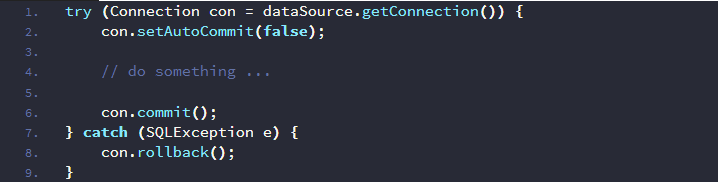
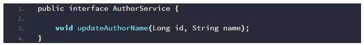
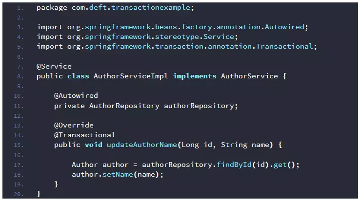
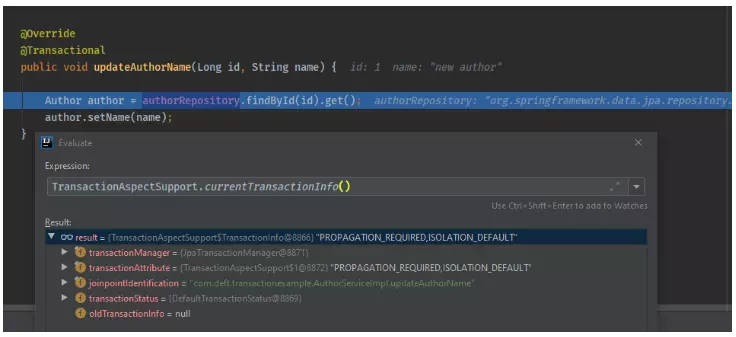
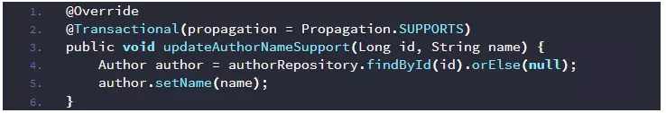
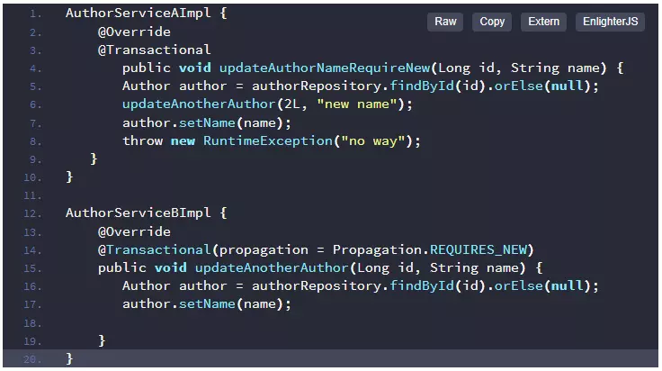

You might have heard of transactions in banking and ordering. Today, we're gonna do a similar thing, but in Spring Boot.
Transaction in banking
When you transfer your cash from your balance to another one, it's not only 1 action. It's a series of actions as follows:
- The banking system has to check your balance. If your funds are not enough, the transaction cannot be performed.
- Your available balance will decrease by the transaction amount.
- The target account must be reachable. In some cases, your funds will be held for several hours to wait for the target account to respond.
- The transaction amount will then be added to the target account. The transaction is now finished successfully.
- If the target account is unreachable (does not exist or is locked), everything will be rolled back, and the transaction will be marked as failed.
Steps 4 and 5 bring the "all or nothing" principle of transaction:
All operations within the transaction must either be completed successfully (committed) or none of them should take effect (rolled back)
ACID - The 4 properties of transactions
Atomicity
A transaction is an all-or-nothing operation. All operations within the transaction must complete successfully, or none of them do. If any part of the transaction fails, the system rolls back all changes, returning the database to its state before the transaction began.
Consistency
A transaction brings the database from one valid state to another. It must preserve all database rules, such as constraints and triggers. For example, a transaction that violates a rule (like creating a negative account balance) will be canceled to maintain database consistency.
Isolation
Concurrent transactions should not interfere with each other. The execution of one transaction should not be affected by the results of another concurrent transaction. This prevents issues like dirty reads, where a transaction views data that has not yet been committed.
Durability
Once a transaction has been successfully committed, its changes are permanent and will survive system failures, such as power outages. This is typically achieved by writing logs to disk.
Transaction in JDBC
Transaction in JDBC
Transaction management in JDBC
In the database, you can "Open" a transaction to temporarily set the AutoCommit to False. But in JDBC, you'll have to do it manually.
- To start a transaction, you'll have to turn off the AutoCommit feature.
- Execute anything you want.
- When you're done, finish your transaction by calling the commit method.
- If something's wrong, call the rollback method to roll back everything from the start.
It's not too hard. But when you need it, you'll have to do lots of repetitive actions
(setAutoCommit(false), commit(), rollback()). These will be
tangled within your project and bring a big mess.
So why don't we just wrap it inside a method or something?
Yes. That's how Spring does it.
Transaction in Spring
With the @Transactional annotation, you can mark a method as a transaction. Everything
will be automatically performed as we declared above. You won't have to repeat anything.
Note: To use @Transactional in Spring MVC, the
@EnableTransactionManagement must be configured. If you use Spring Boot with
spring-data or spring-tx, the transaction feature will also be enabled automatically.
For example, we have a simple service like this:
Service Interface
And its implementation:
Service Implementation
The @Transactional annotation will tell Spring that the updateAuthorName
must be wrapped in a transaction. When the method is called, Spring will then create a proxy object
to wrap the method under a transaction and perform everything automatically. The proxy will then
commit or rollback the actions if it encounters an exception or error. Everything is in the
underground.
Spring also provides some additional features for customizing the transactions, including Transaction Propagation and Exception handling.
Transaction Propagation
REQUIRED
This is the default value of the propagation.
If there's any existing transaction, the transaction will be shared. Otherwise, a new one will be created.
Let's reuse the above example. We can use the TransactionAspectSupport to evaluate the
current transaction. Before calling the updateAuthorName method, there's no transaction
(the result is null).
Before calling the method
After calling the method, a new transaction is created.
After calling the method
SUPPORTS
This means the existing transaction will be shared. If none, the method will then be executed without wrapping under any transaction.
SUPPORTS propagation
MANDATORY
MANDATORY requires an in-progress transaction before calling the method. Otherwise, an exception is triggered.
IllegalTransactionStateException
NEVER
If the method is called under a transaction, an exception is thrown.
NOT_SUPPORTED
Stop all the existing transactions and execute the method without wrapping it under any transaction.
REQUIRES_NEW
Always create a new transaction to wrap the method. If the call is under a transaction, the outer transaction is then paused to perform the inner transaction. The inner one will be executed independently of the outer one. After the inner transaction is finished, the outer one is continued.
REQUIRES_NEW propagation
In the above example, the updateAnotherAuthor is called inside the
updateAuthorNameRequireNew method, which is under a transaction. Because the
Propagation is REQUIRES_NEW, it will then execute everything, whether the
updateAuthorNameRequireNew method throws any exceptions or errors.
NESTED
If there's no existing transaction, a new one will be created to call the method. Otherwise, Spring will then create a save point and roll back to it if something's wrong.
Exception handling
As mentioned above, if the program encounters exceptions, the transaction will then be rolled back.
But it can be customized by using rollbackFor and noRollbackFor
properties.
Based on their names, we can guess their meaning. The rollbackFor is used to customize
the group of exceptions that will trigger the rollback action, while the noRollbackFor
is used oppositely.
rollbackFor and noRollbackFor
In the example above, all of the exceptions will trigger the rollback action, except the
EntityNotFoundException.